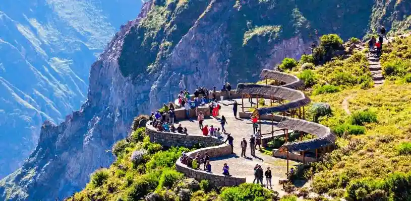
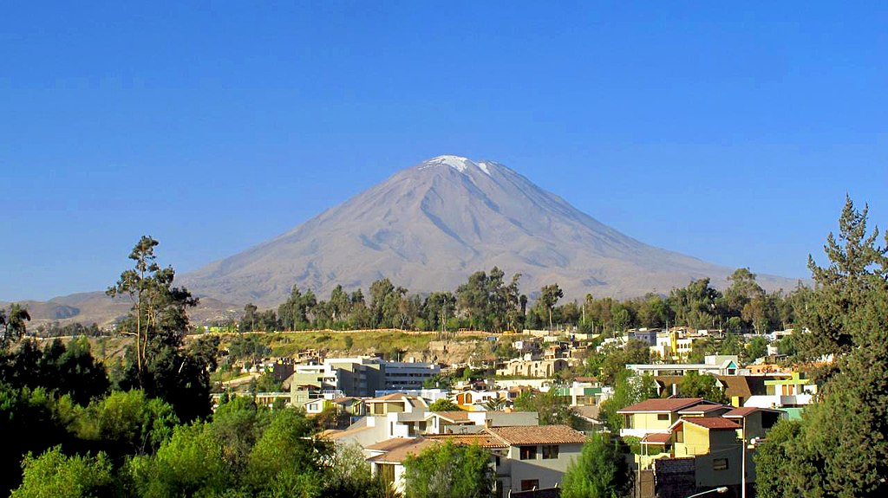

AREQUIPA

Atractivos Turísticos
La Plaza de Armas

Es el corazón de la ciudad y cuenta con una hermosa catedral y
elegantes arcadas. Es un lugar ideal para relajarse y disfrutar del
ambiente.
Está ubicada en el Centro histórico de Arequipa, a su alrededor está
la Catedral de Arequipa en el Norte, los Portales de Arequipa al este,
sur y oeste, La Iglesia La Compañía al sur-este, La Iglesia Nuestra
señora de la Merced al sur-oeste y en el centro de la plaza una pileta
de bronce.
El Cañón del Colca
El valle del Colca está ubicado en la provincia de Caylloma. Colca proviene de las palabras Collaguas y Cabanas, dos etnias que habitaban a lo largo del río Colca. Este cañón tiene una profundidad de 4160 m, y es el cuarto cañón más profundo del planeta.
El Volcán Misti

Es el volcán más icónico de Arequipa. Aunque escalarlo requiere
preparación y guías especializados, su majestuosidad se puede admirar
desde la ciudad.
Se ha convertido en uno de los mayores símbolos de Arequipa. Durante
la época colonial la mayor parte de las casas fueron construidas con
el sillar, piedra blanca formada con la deposición de cenizas y
lapilli durante las erupciones piroclásticas del volcán. La última vez
que el Misti demostró algún tipo de actividad relevante, como por
ejemplo grandes fumarolas, fue en 1870.
Mas lugares turisticos aqui:
Fauna de Arequipa
Vizcacha

Esta especie de roedor de aspecto peculiar se encuentra en las áreas montañosas de Arequipa. Tienen una apariencia similar a la de una liebre con una cola larga y peluda.
Zorro Andino

También conocido como "zorro de la puna", este mamífero se encuentra en las zonas altas de los Andes. Tiene un pelaje espeso y denso que le permite sobrevivir a las bajas temperaturas de la región.